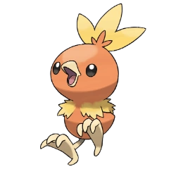
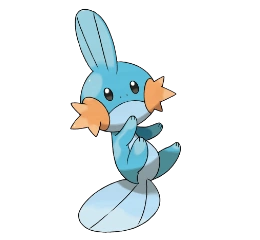
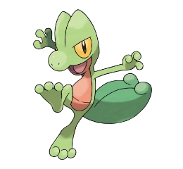
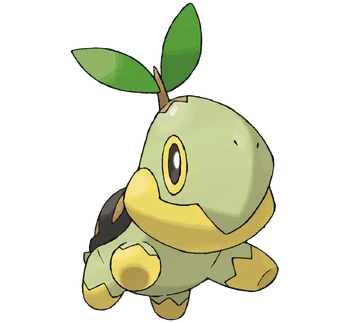
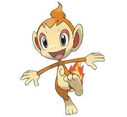
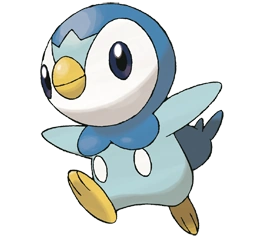
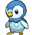

Tercera generación
La región de Hoenn trajo consigo a Torchic, Mudkip y Treecko, nuevos amigos que acabarían ganándose un hueco en
nuestros corazones.
- Torchic

- Este Pokémon está basado en un pequeño pollito. Torchic está cubierto por una suave capa de plumas con tonos
anaranjados, sus alas son
inútiles para volar debido a su pequeño tamaño. Antes que sus patas se desarrollen completamente, este
Pokémon se mantiene cerca de su
entrenador, siguiéndole a todos lados mientras aprende a caminar.
Tiene un saco interno en su estómago en el que hay fuego ardiendo todo el tiempo, lo que le permite arrojar
bolas de fuego en batallas
a una temperatura cercana a los 1000 °C, por ello Torchic está caliente al tacto. En las noches cuando va a
dormir coloca su cabeza
entre el plumaje de su espalda.
Le gustan los lugares calientes debido a que nace, crece y vive en ellos. Comparte características con
Chimchar como la bolsa de fuego
en su estómago.
Los Torchic le tienen miedo a la oscuridad debido a que les impide ver lo que les rodea. Torchic
evolucionará cuando llegue el momento
adecuado, cuando sea lo suficientemente fuerte como para convertirse en un Combusken.
- Mudkip

-
La cresta en la cabeza de Mudkip actúa como un radar altamente sensible. Esto le permite sentir los
movimientos del agua y el aire, con
lo que puede determinar qué es lo que ocurre a su alrededor sin usar sus ojos. Cuando está en el agua,
respira utilizando las puntas de
sus mejillas, ya que realmente son branquias.
Parece estar basado en un pez del fango ya que, al igual que Mudkip, es un pez con morfología anfibia. Pero
al parecer también podría estar basado en un
ajolote debido a ser un anfibio y los picos de sus mejillas, por lo que se podría decir que Mudkip es una
mezcla entre un pez de fango y un ajolote.
En tierra, Mudkip puede levantar rocas grandes sujetando sus cuatro patas al suelo y haciendo palanca con la
cabeza. Duerme enterrándose en la tierra
blanda del borde del agua, por ejemplo, de la orilla de un río. Su larga cola (que es más bien una especie
de aleta), le provee con una propulsión y
dirección más que aceptables en el agua, haciendo que sea veloz como una bala de cañón al nadar. También
puede usarla como un bate, endureciéndola, de
este modo puede lanzar cosas muy lejos bateándolas.
Este Pokémon es cuadrúpedo (lo que significa que camina con sus 4 patas), aunque también puede pararse en
sus dos patas traseras y sostenerse en ellas durante algún tiempo.
- Treecko

-
Treecko está basado en un geco cola de hoja. Tiene unos ganchos pequeños en las plantas de los pies con
los que puede escalar superficies verticales, se dice que incluso pueden caminar sobre vidrio. Es
carismático, tranquilo y con gran capacidad de autocontrol. Si algún rival se le queda mirando, también
él le devolverá la misma mirada sin concederle a su rival ningún centímetro de espacio. Si el rival
entra en su territorio le atacará con destructor.
Este Pokémon tiende a vivir en bosques y selvas, pero también puede vivir en praderas. Se saben que sienten
mucho
respeto por el árbol en el que nacieron, ya que lo cuidan y protegen con todas sus fuerzas. Suele usar su
cola como
un miembro más a la hora de trepar por los árboles, un poco similar a Aipom, sin que esta llegue a ser tan
sensible,
pero sí llega a poseer una fuerza asombrosa.
Comen bayas de todo tipo, no necesitan guardarlas para el invierno porque al ser territoriales ningún
Pokémon se
animaría a sacar comida de ese lugar.
Cuarta generación
- Turtwig

-
Turtwig tiene un aspecto similar al de una tortuga bebé, sólo se ve diferenciado de estas por el hecho de
que en su cabeza crece un tallo con una rama y de esta salen dos hojas y al hecho de que su caparazón
esta constituido completamente de tierra, si el Pokémon está sano, este está húmedo y se endurece cuando
Turtwig bebe agua. Generalmente habitan en zonas cercanas a ríos ya que necesita agua para mantener
las hojas de su cabeza, de lo contrario estas se marchitarían. Además, gracias a estas puede realizar
el proceso de la fotosíntesis, por eso los entrenadores suelen cuidar mucho las hojas de la cabeza de
Turtwig.
Este Pokémon es muy fuerte teniendo en cuenta la relación que haya con su entrenador, coordinador o criador.
Su gama
de ataques variados y su aparente ternura lo hacen un Pokémon idóneo tanto para batallas como para
concursos; para
los segundos es recomendable tener especial cuidado. Es común entre los coordinadores recortar parcialmente
las hojas
de la cabeza de Turtwig, pero esto debe hacerse con suma delicadeza, a pesar de que estas volverán a crecer,
un mal
corte podría ocasionar problemas con el uso de ataques de tipo planta, así como afectar la agilidad del
Pokémon y
otros factores, entre los que destaca la felicidad del Pokémon. Por eso hay que cuidar muy bien las hojas de
Turtwig
o sino llevarlo a un criador para que se encargue de esto.
- Chimchar

- Chimchar está basado en un bebé babuino lo demuestran sus grandes orejas y su pequeño hocico, además que
Chimchar tiene un copete, a pesar de que suele salir a una edad mayor en los babuinos, cuando les crece el
cráneo.
Su pelaje es de un color naranja pálido. Posee una llama en su cola que es producida quemándose el gas en
su estómago; ésta no se apaga en la lluvia, aunque sí cuando va a dormir. Su voz recuerda a una cría de mono
araña. Por ser un chimpancé, tiene gran agilidad, sobre todo en los árboles, esto se comprueba en el primer
episodio de Diamante y Perla, y además porque el Chimchar de Ash en el sexto episodio (en manos de Paul/Polo
en esas instancias) esquivaba muy veloz y ágilmente los ataques de Turtwig. Chimchar es muy cariñoso con
su entrenador.
Piplup


Piplup está basado en una cría de pingüino emperador. Sus colores son un celeste y azul intenso y tiene dos
botones
blancos colocados en su vientre. Este aspecto parece indicar que tiene influencia de un pingüino azul.
Los Piplup viven junto a sus demás evoluciones en grandes colonias dirigidas por un Empoleon, el patriarca.
Reciben una dura instrucción, pues la vida en colonia suele ser dura y cada uno tiene que mirar por sí mismo.
Pese a eso los padres le ofrecen ayuda y alimento constante durante los primeros meses, hasta que el joven
Piplup sea capaz de proveerse el mismo.
Los Piplup, ya sea por su naturaleza o intuición, aprenden a nadar a los escasos días de nacer, ya que estos
muestran más habilidad y destreza bajo el agua, que no en la superficie. Al igual que todas sus evoluciones,
el cuerpo de Piplup está diseñado genéticamente de forma hidrodinámica, lo cual le permite alcanzar grandes
velocidades bajo el agua, aunque por poco tiempo. A veces no acepta comida procedente de humanos, pudiendo
llegar a atacar para defender su orgullo.